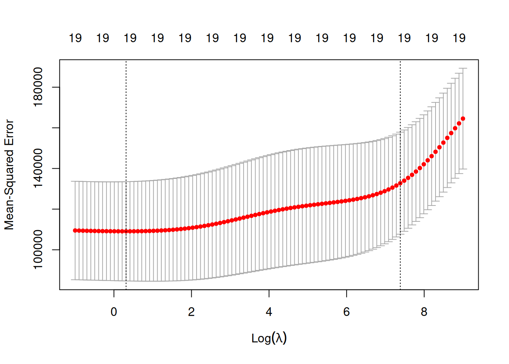

Show the code
# Données
library(ISLR) # Hitters data
library(dplyr) # manipulation des données
# Infrence
library(pls) ## PCR et PLSR
library(glmnet) ## regression pénalisée
# Plots
## ggplot
library(ggplot2)
library(gridExtra)# Données
library(ISLR) # Hitters data
library(dplyr) # manipulation des données
# Infrence
library(pls) ## PCR et PLSR
library(glmnet) ## regression pénalisée
# Plots
## ggplot
library(ggplot2)
library(gridExtra)my_interactive_boxplot <- function(data) {
data_long <- reshape2::melt(data)
p <- ggplot(data_long,
aes(
x = variable,
y = value,
fill = variable,
stat = "identity"
)) +
geom_boxplot() +
scale_fill_viridis_d() +
labs(title = "Distribution des Variables (Intercative Boxplot)", x = "Variables", y = "Valeurs") +
theme_minimal() +
theme(axis.text.x = element_text(angle = 45, hjust = 1))
return(plotly::ggplotly(p))
}set.seed(140400)Cette exercice est la suite direct de l’Exercice 06 où l’on a pu utiliser les méthodes de regressions avec reduction de dimension PCR et PLSR.
On va donc reprendre les mêmes données avec le même découpage en train et test.
Hitters_Without_NA <- Hitters %>% na.omit()
percent_to_draw <- 0.75
index_train <- sample(nrow(Hitters_Without_NA), size = floor(percent_to_draw * nrow(Hitters_Without_NA)))
Hitters_train <- Hitters_Without_NA[index_train, ]
Hitters_test <- Hitters_Without_NA[-index_train, ]Notre objectif ici sera donc de compléter l’analyse de l’Exercice 06 en utilisant cette fois ci les méthodes de regression pénalisée Ridge et Lasso (méthodes détaillées dans l’Exercice 06 Bonus : Ridge vs Lasso).
Contrairement à la plupart des autres package R qui permettent de faire de l’apprentissage, le package glmnet n’autorise pas l’utilisation de formules.
Il faut donc spécifier explicitement la matrice \(X\) et le vecteur \(y\).
On peut obtenir la matrice \(X\) et notamment le codage des variables qualitatives avec la fonction model.matrix.
X_train <- model.matrix(Salary ~ ., data = Hitters_train)[, -1]
Y_train <- Hitters_train$Salary
X_test <- model.matrix(Salary ~ ., data = Hitters_test)[, -1]
Y_test <- Hitters_test$SalaryEt ce n’est qu’après que l’on peut mettre en place la modélisation.
mod.R <- glmnet(X_train, Y_train, alpha = 0) On peut également visualiser les chemins de régularisation des estimateurs Ridge.
plot(mod.R, xvar = "lambda", label = TRUE)Ici on voit l’évolution de nos coefficients \(\beta\) en fonction des diffrentes valeurs de \(\lambda\).
Ainsi, sur la gauche on se retrouve dans la situation où il n’y a pas de pénalisation et donc nos coefficients sont les \(\beta\) de l’estimation par moindres carrés. Et donc plus \(\lambda\) va augmenter, plus on se retrouvera dans une situation où les coefficients vont tendrent vers 0.
mod.L <- glmnet(X_train, Y_train, alpha = 1) On peut également visualiser les chemins de régularisation des estimateurs Lasso.
plot(mod.L, xvar = "lambda", label = TRUE)
Ici on voit l’évolution de nos coefficients \(\beta\) en fonction des diffrentes valeurs de \(\lambda\).
Ainsi, sur la gauche on se retrouve dans la situation où il n’y a pas de pénalisation et donc nos coefficients sont les \(\beta\) de l’estimation par moindres carrés. Et donc plus \(\lambda\) va augmenter, plus on se retrouvera dans une situation où les coefficients vont tendrent vers 0.
Maintenant que les modèles sont estimés avec plusieurs valeurs de \(\lambda\) possibles, il se pose la question du choix du bon paramètre.
Pour cela, on utilise la fonction cv.glmnet qui, comme son nom le laisse suggérer, permet d’effectuer une validation croisée pour notre modèle avec par défaut nfolds=10 (le nombre de pli pour le découpage de sous ensembles). Puis on peut faire un plot de l’objet.
ridgeCV <- cv.glmnet(X_train, Y_train, alpha = 0)
plot(ridgeCV)
On visualise ici les erreurs quadratiques calculées par validation croisée 10 blocs en fonction de \(\lambda\) (échelle logarithmique). Deux traits verticaux sont représentés :
celui de gauche correspond à la valeur de \(\lambda\) qui minimise l’erreur quadratique
celui de droite correspond à la plus grande valeur de \(\lambda\) telle que l’erreur ne dépasse pas l’erreur minimale + 1 écart-type estimé de cette erreur
D’un point de vu pratique, cela signifie que l’utilisateur peut choisir n’importe quelle valeur de lambda entre les deux traits verticaux.
A savoir que si l’on veut diminuer la complexité du modèle on choisira la valeur de droite.
Attention, on peut remarquer ici que l’axe verticale de gauche semble toucher le bord du plot. Dans ces cas là, il convient de parametrer les \(\lambda\) de telle sorte à “explorer” des valeurs de \(\lambda\) plus petite.
ridgeCV2 <- cv.glmnet(X_train, Y_train, alpha = 0, lambda = seq(exp(-1), exp(9), by = 1))
plot(ridgeCV2)
Cette fois ci, nos deux axes verticaux sont éloignés du bord du graphe et on voit bien qu’on a pu baisser ma valeur minimal de \(\lambda\).
Résultats
Ici on on obtient \(\lambda_{min} =\) 1.368 et \(\lambda_{1se} =\) 1468.368
lassoCV <- cv.glmnet(X_train, Y_train, alpha = 1)
plot(lassoCV)
On visualise ici les erreurs quadratiques calculées par validation croisée 10 blocs en fonction de \(\lambda\) (échelle logarithmique). Deux traits verticaux sont représentés :
celui de gauche correspond à la valeur de \(\lambda\) qui minimise l’erreur quadratique
celui de droite correspond à la plus grande valeur de \(\lambda\) telle que l’erreur ne dépasse pas l’erreur minimale + 1 écart-type estimé de cette erreur
D’un point de vu pratique, cela signifie que l’utilisateur peut choisir n’importe quelle valeur de lambda entre les deux traits verticaux.
A savoir que si l’on veut diminuer la complexité du modèle on choisira la valeur de droite.
Résultats
Ici on on obtient \(\lambda_{min} =\) 1.167 et \(\lambda_{1se} =\) 84.295
On souhaite maintenant prédiction pour le jeu de données test.
Une première approche pourrait consister à réajuster le modèle sur toutes les données pour la valeur de \(\lambda\) sélectionnée.
Cette étape est en réalité déjà effectuée par la fonction cv.glmnet. Il suffit par conséquent d’appliquer la fonction predict à l’objet obtenu avec cv.glmnet en spécifiant la valeur de \(\lambda\) souhaitée puis on calcul l’erreur de prediction pour les modèles Ridge et Lasso.
pred.ridge_min <- predict(ridgeCV, newx = X_test, s = "lambda.min")
rmsep_ridge <- sqrt(mean((pred.ridge_min - Y_test)^2, na.rm=T))
pred.lasso_min <- predict(lassoCV, newx = X_test, s = "lambda.min")
rmsep_lasso <- sqrt(mean((pred.lasso_min - Y_test)^2, na.rm=T))Ainsi on peut obtenir l’erreur de prédiction via le RMSEP pour les 2 modèles et les comparer avec les valeurs obtenues pour les méthodes précédemment testées : Sélection automatique forward, PCR, PLSR.
## Sélection automatique
########################
mod0 <- lm(Salary ~ 0, data = Hitters_train)
mod1 <- lm(Salary ~ ., data = Hitters_train)
mod_step <- step(
mod0,
scope = formula(mod1),
trace = FALSE,
direction = "forward",
k = log(nrow(Hitters_train))
)
hat_Hitters_test_mod_step <- predict(mod_step, Hitters_test)
rmsep_mod_step <- sqrt(mean((
hat_Hitters_test_mod_step - Hitters_test$Salary
) ** 2))
## PCR
########################
mod_pcr <- pcr(
Salary ~ .,
scale = TRUE,
data = Hitters_train,
validation = "CV",
segments = 10
)
ncomp.rmsep_pcr <- which.min(RMSEP(mod_pcr, estimate = c("CV"))$val["CV", , ]) -
1
hat_Hitters_test_mod_pcr <- predict(mod_pcr, Hitters_test, ncomp = (which.min(RMSEP(
mod_pcr, estimate = c("CV")
)$val["CV", , ]) - 1))
rmsep_mod_pcr <- sqrt(mean((
hat_Hitters_test_mod_pcr - Hitters_test$Salary
) ** 2))
## PLS
########################
mod_pls <- plsr(
Salary ~ .,
scale = TRUE,
data = Hitters_train,
validation = "CV",
segments = 10
)
ncomp.rmsep_pls <- which.min(RMSEP(mod_pls, estimate = c("CV"))$val["CV", , ]) -
1
hat_df_test_salary.pls <- predict(mod_pls, Hitters_test, ncomp = (which.min(RMSEP(
mod_pls, estimate = c("CV")
)$val["CV", , ]) - 1))
rmsep_mod_pls <- sqrt(mean((
hat_df_test_salary.pls - Hitters_test$Salary
) ** 2))methods <- c("Err_mod_step",
"Err_PCR",
"Err_PLS",
"Err_Ridge",
"Err_Lasso_glmnet")
errors <- c(rmsep_mod_step,
rmsep_mod_pcr,
rmsep_mod_pls,
rmsep_ridge,
rmsep_lasso)
rmsep_pred_df <- data.frame(Method = factor(methods, levels = methods), Error = round(errors, 3))
p <- ggplot(rmsep_pred_df, aes(x = Method, y = Error, fill = Method)) +
geom_bar(stat = "identity",
width = 0.6,
color = "black") +
geom_text(aes(label = round(Error, 3)), fontface = "bold", vjust = -1.5, size = 6) +
scale_fill_viridis_d() +
ylim(0, 450) +
theme_minimal() +
labs(title = "Erreur pour les différentes méthodes", x = "Méthode", y = "Erreur") +
theme(axis.text.x = element_text(angle = 45, hjust = 1))
prmsep_pred_df %>% DT::datatable()Résultats
On peut voir ici que c’est la méthode Ridge qui minimise l’erreur de prédiction.
Pour confirmer ou contredire nos résultats, il convient maintenant de tester les méthodes \(K\) fois pour btenir \(K\) erreurs de prédictions et ainsi regarder la méthode qui, en moyenne, va minimiser cette erreur tout en prenant en compte la variance des erreurs.
K <- 10
n <- nrow(Hitters_Without_NA)
seg <- pls::cvsegments(n, K)
err_step <- NULL
err_pcr <- NULL
err_pls <- NULL
err_ridge <- NULL
err_lasso <- NULL
err_lars <- NULL
for (i in 1:K) {
test <- seg[[i]]
mod0 <- lm(Salary ~ 0, data = Hitters_Without_NA, subset = -test)
mod1 <- lm(Salary ~ ., data = Hitters_Without_NA, subset = -test)
mod_step <- step(
mod0,
scope = formula(mod1),
direction = "forward",
k = log(n),
trace = 0
)
mod_step_pred <- predict(mod_step, Hitters_Without_NA[test, ])
err_step[i] <- sqrt(mean((mod_step_pred - Hitters_Without_NA[test, 19])^2, na.rm =
T))
pcr.fit <- pcr(
Salary ~ .,
data = Hitters_Without_NA,
scale = TRUE,
subset = -test,
validation = "CV",
segments = 10
)
nb_comp <- which.min(RMSEP(pcr.fit, 'CV')$val[, , 1:10])
pcr.pred <- predict(pcr.fit, Hitters_Without_NA[test, ], ncomp = nb_comp)
err_pcr[i] <- sqrt(mean((pcr.pred - Hitters_Without_NA[test, 19])^2, na.rm =
T))
pls.fit <- plsr(
Salary ~ .,
data = Hitters_Without_NA,
subset = -test,
scale = TRUE,
validation = "CV"
)
nb_comp <- which.min(RMSEP(pls.fit, 'CV')$val[, , 1:10])
pls.pred <- predict(pls.fit, Hitters_Without_NA[test, ], ncomp = nb_comp)
err_pls[i] <- sqrt(mean((pls.pred - Hitters_Without_NA[test, 19])^2, na.rm =
T))
train.mat <- model.matrix(Salary ~ ., data = Hitters_Without_NA[-test, ])
train.mat <- train.mat[, -1]
y <- Hitters_Without_NA[-test, 19]
test.mat <- model.matrix(Salary ~ ., data = Hitters_Without_NA[test, ])
test.mat <- test.mat[, -1]
ytest <- Hitters_Without_NA[test, 19]
ridge.cv <- cv.glmnet(train.mat, y, alpha = 0, lambda = seq(1, 5000))
lambdachoisi <- ridge.cv$lambda.min
ridge.pred <- predict(ridge.cv, test.mat, s = lambdachoisi)
err_ridge[i] <- sqrt(mean((ridge.pred - Hitters_Without_NA[test, 19])^2, na.rm =
T))
lasso.cv <- cv.glmnet(train.mat, y, alpha = 1)
lasso.pred <- predict(lasso.cv, test.mat, s = lasso.cv$lambda.min)
err_lasso[i] <- sqrt(mean((lasso.pred - Hitters_Without_NA[test, 19])^2, na.rm =
T))
# lars.cv <- cv.lars(train.mat, y)
# choix <- lars.cv$index[which.min(lars.cv$cv)]
# temp <- lars(train.mat, y)
# lars.pred <- predict(temp, train.mat, s=choix, mode='fraction')$fit
# err_lars[i] <- sqrt(mean((lars.pred - Hitters_Without_NA[test,19])^2, na.rm=T))
}
err_pred_df <- cbind(err_step, err_pcr, err_pls, err_ridge, err_lasso) %>% as.data.frame()
colnames(err_pred_df) <- c("Err_mod_step", "Err_PCR", "Err_PLS", "Err_Ridge", "Err_Lasso_glmnet")my_interactive_boxplot(err_pred_df)methods <- c("Err_mod.step",
"Err_PCR",
"Err_PLS",
"Err_Ridge",
"Err_Lasso_glmnet")
errors.mean <- sapply(list(err_step, err_pcr, err_pls, err_ridge, err_lasso), function(x) mean(x))
errors.median <- sapply(list(err_step, err_pcr, err_pls, err_ridge, err_lasso), function(x) median(x))
q1_values <- sapply(list(err_step, err_pcr, err_pls, err_ridge, err_lasso), function(x) quantile(x, 0.25))
q3_values <- sapply(list(err_step, err_pcr, err_pls, err_ridge, err_lasso), function(x) quantile(x, 0.75))
iq_values <- q3_values - q1_values
err.mean_pred_df <- data.frame(
Method = methods,
Mean_Error = round(errors.mean, 3),
Median_Error = round(errors.median, 3),
InterQartile_Error = round(iq_values, 3)
)
err.mean_pred_df %>% DT::datatable()Résultats
En analysant les résultats, on constate que la méthode Ridge minimise à la fois l’erreur moyenne et l’erreur médiane, suivie de près par la méthode PCR, puis Lasso. En revanche, les valeurs d’erreurs sont moins variables pour la méthode Lasso, suivie de Ridge, et enfin PLSR.
Cela suggère que, pour choisir la méthode la plus efficace dans notre contexte, il convient de trouver un bon compromis entre la réduction de l’erreur moyenne et la faible variabilité des erreurs. Dans ce cas, les méthodes Ridge et Lasso semblent offrir le meilleur équilibre. Le choix final pourrait alors dépendre de la préférence accordée à une méthode qui minimise les fluctuations des erreurs.
Pour les curieux, il pourra être intéressant de faire varier la valeur de \(K\) et ainsi remarquer que les méthodes les plus performantes ne sont pas toujours les mêmes.
En conclusion, nous avons pu observer l’efficacité des méthodes Ridge et Lasso par rapport à PCR, PLSR et la sélection forward. Ces deux dernières méthodes se distinguent par une capacité à minimiser les erreurs moyennes tout en offrant une stabilité dans les prédictions.
Cependant, il est important de noter que PCR, PLSR et la sélection forward présentent aussi de bonnes performances et restent donc des méthodes pertinentes qui peuvent être particulièrement utiles dans certains contextes, en fonction des caractéristiques spécifiques des données et des objectifs de modélisation.
Ainsi, le choix de la méthode dépendra du compromis souhaité entre précision et variabilité des résultats.
sessioninfo::session_info(pkgs = "attached")─ Session info ───────────────────────────────────────────────────────────────
setting value
version R version 4.4.2 (2024-10-31)
os Ubuntu 24.04.1 LTS
system x86_64, linux-gnu
ui X11
language (EN)
collate fr_FR.UTF-8
ctype fr_FR.UTF-8
tz Europe/Paris
date 2025-02-25
pandoc 3.2 @ /usr/lib/rstudio/resources/app/bin/quarto/bin/tools/x86_64/ (via rmarkdown)
─ Packages ───────────────────────────────────────────────────────────────────
package * version date (UTC) lib source
dplyr * 1.1.4 2023-11-17 [1] CRAN (R 4.4.2)
ggplot2 * 3.5.1 2024-04-23 [1] CRAN (R 4.4.2)
glmnet * 4.1-8 2023-08-22 [1] CRAN (R 4.4.2)
gridExtra * 2.3 2017-09-09 [1] CRAN (R 4.4.2)
ISLR * 1.4 2021-09-15 [1] CRAN (R 4.4.2)
Matrix * 1.6-5 2024-01-11 [4] CRAN (R 4.3.2)
pls * 2.8-5 2024-09-15 [1] CRAN (R 4.4.2)
[1] /home/clement/R/x86_64-pc-linux-gnu-library/4.4
[2] /usr/local/lib/R/site-library
[3] /usr/lib/R/site-library
[4] /usr/lib/R/library
──────────────────────────────────────────────────────────────────────────────